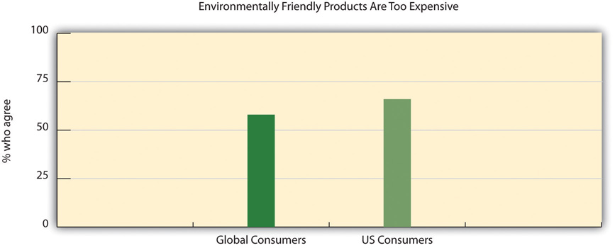

With all the attention given to sustainability, the question remains, why aren’t more consumers using green products? There are three key barriers that sustainability marketers need to keep in mind to better position their products for growth:
Mainstream America Unmoved by Green Marketing“Mainstream America Unmoved by Green Marketing,” SustainableBusiness.com, http://www.sustainablebusiness.com/index.cfm/go/news.display/id/22277.
Green marketing messages targeting mainstream American consumers are missing the mark, according to a study released in 2011 by consultant group OgilvyEarth. The report included research that showed that many of the environmental messages of marketers were not just failing to close what the study called the Green Gap, but were actually cementing it by making green behavior too difficult and costly from a practical, financial, and social standpoint.
“Many of the world’s leading corporations are staking their futures on the bet that sustainability will become a major driver of mainstream consumer purchase behavior. Unless they can figure out how to close the gap, there will never be a business case for green,” added Freya Williams, Co-Founder and Director of Strategy at OgilvyEarth and co-author of the study.
The study found that 82% of Americans have good green intentions but only 16% are dedicated to fulfilling these intentions, putting 66% firmly in what the report called the “middle green.” Considering green behavior on a continuum, most of the dialogue and marketing to date according to the report has focused on “super greens” on the one hand and “green rejecters” on the other. There has been limited success in motivating the masses or the middle green.
Existing green marketing is either irrelevant or even alienating to most Americans, the study asserts. Half of Americans think green and environmentally friendly products are marketed to “Crunchy Granola Hippies” or “Rich Elitist Snobs” rather than “Everyday Americans.”
The report highlighted that cost continues to be the greatest barrier that holds Americans back from more sustainable purchases.
“One trip to the grocery store and you would see that green products can have as much as a 100% price premium. It’s as if we’re penalizing virtuous behaviors with a de facto sustainability tax,” says Bennett.
But price was far from the only thing preventing consumer behavior change. The super green minority, according to the report, who venture into the green space do so with a relatively high social and emotional cost. They say they feel ostracized from their neighbors, families, and friends. Meanwhile the middle greens say they fear attracting the negative judgment of their peers if they go out on a limb to purchase green products. Until green products and services feel normal and adhere to normative pricing, the middle green are unlikely to embrace them.
Nearly half of Americans claim to feel guiltier “the more they know” about how to live a sustainable lifestyle. Super greens feel twice the guilt as the average American. Even among the green middle, guilt plays a role. As it increases, these consumers want to retreat to the comfort of ignorance.
“Understanding the prevalent misuse of appeals to a sense of guilt, we can see where sustainability marketing has gone wrong,” says Williams. “People don’t need to know about the state of polar bears in the Arctic to turn off the lights—paradoxically it may be stopping them from doing so.”
The barrier to adopting sustainable behaviors is even higher for men. Fully 82% of respondents say going green is “more feminine than masculine.” More men identify as Green Rejecters, and the ranks of the Super Greens are dominated by women. This feminization holds men back from visible green behavior like using reusable grocery bags or carrying around reusable water bottles.
Price is a well-recognized hurdle for many consumers in purchasing sustainable products and services. Sixty-six percent of US consumers view environmentally friendly products as too expensive. Whether consumers are looking to purchase an energy saving light bulb or environmentally friendly home cleaning products, these products often cost more than the most popular consumer versions. Often the premium price puts these products out of the reach or interest of the majority of consumers. And the price premium as a hurdle is magnified during economic downturns.
Gap between Concern and the Cash Register
Overall, 83 percent of global online consumers reported in Nielsen’s 2011 Global Online Environment and Sustainability Survey (http://www.nielsen.com/us/en/insights/press-room/2011/global-warming-cools-off-as-top-concern.html) say that it is important that companies implement programs to improve the environment, but only 22 percent say they will pay more for an eco-friendly product. Willingness to pay extra for environmentally friendly goods is highest in the Middle East and Africa, where one-third of consumers are willing, and lowest in North America, where only 12 percent of both Canadians and Americans say they will pay extra for eco-friendly products. Many consumers reported a personal preference for eco-friendly goods, but large percentages of respondents report setting aside this preference and buying whichever product is cheapest, including 48 percent in North America, 36 percent in the Middle East and Africa, 35 percent in Europe, 33 percent in Asia Pacific, and 27 percent in Latin America.
The price premium compared to the conventional alternative needs to be addressed through the three other parts of the marketing mix (product, place, and promotion). But the most effective way to address the price premium is to address it directly—to find ways to reduce it. Reducing the sustainable price premium is a key factor in having a greater percentage of average consumers purchase more environmentally favorable products.
Figure 6.12
Source: Gfk Roper Green Gauge Report, September 22, 2010, http://www.eMarketerGreen.com.
Marketers need to clearly communicate the product’s benefits and sustainable position especially when commanding a premium price. The challenge is that greener products do not have a stellar history of performing well. In the 1970s, green laundry detergents were developed as a result of concerns over phosphates—a chemical that can cause environmental degradation in large quantities—and resulted in gray, dingy clothes. The original organic cereals tasted like cardboard to many consumers and the early versions of energy efficient light bulbs cast a green glow. Many consumers—roughly a third in the United States and around the globe—still question the efficacy of green products versus their regular, nongreen product alternatives despite strides made in product performance.
Going Green Packaging? Go Softly.
In April 2009, Frito Lay introduced a biodegradable bag for Sun Chips with a big marketing effort to play up its environmentally friendly nature as it was made from plants and not plastic and could break down in compost. Sound good?
Well, the stiffer material made the packaging give off a loud annoying noise that measured at roughly eighty to eighty-five decibels. Consumers compared this sound to a noisy busy city street or even a jet engine. The criticism grew so much that within six months, the company was forced to switch back to its original bag. It didn’t help that sales dropped 11 percent during that timeframe as well.“SunChips Bag Proves It Not Easy Being ‘Green,’” Washington Post, October 7, 2010, http://www.washingtonpost.com/wp-dyn/content/article/2010/10/06/AR2010100606681.html.
Marketers need to stress the traditional benefits of the sustainable good and must demonstrate the product’s effectiveness. This can be more important than highlighting the sustainability benefits to overcome inherent consumer skepticism.
Figure 6.13

Source: Gfk Roper Green Gauge Report, September 22, 2010, http://www.eMarketerGreen.com.
A good example of this is Glad Products Company’s 2011 introduction of a version of its Glad tall kitchen drawstring trash bag that is made with less plastic. Glad Products, a joint venture of the Clorox Company and Procter & Gamble, spent over $30 million on a campaign to introduce the trash bags. The bags were billed in ads and on packages as “strength with less plastic” and “stronger with less plastic waste.” (The bags were made using 6.5 percent less plastic than before, Glad Products executives say, and have what are called reinforcing bands to make the bags stronger.)Stuart Elliot, “Glad Cuts the Hyperbole for Its New Green Trash Bag,” New York Times, October 19, 2011. The company smartly kept the price at parity to more conventional counterparts, thereby eliminating the green pricing gap. They have made it easier for consumers to adopt this more sustainable product. Moreover, they have positioned it correctly by combining an efficacy product benefit, “stronger,” with a sustainable benefit, “with less plastic/less plastic waste.” That’s a win-win-win.
Many sustainable practices require consumers to change their habits and adopt new ones. Recycling, turning off the lights, lowering the thermostat in winter, using recyclable bags for shopping—all require changing behavior. Typically changing a behavior is a slow process as consumers have to be retaught a habit. That is why Generation YRefers broadly to the demographic cohort born between 1978 and 1995. The group is viewed as tech savvy and reliant on new media and digital technology. Generation Y and millennials are the children of the post–World War II baby boomer generation., often referred to as millennialsAn abbreviation for millennial generation, it is a term used by demographers to describe a segment of the population born between 1980 and 2000, a slightly narrower and younger subsegment of the Generation Y demographic group., are quicker to adopt sustainability practices since they are not breaking old habits.
Most behavioral changes are more readily adopted when there is a perceived consumer benefit, for example, using a kitchen bag with less plastic that is stronger and driving a fuel-efficient car that saves money at the gas pump. Using a more energy efficient, longer-lasting light bulb and a programmable thermostat can save on energy costs and conserving water using a more efficient toilet saves on the water bill. Marketers can help consumers more quickly adopt new behavior and buy new products when they highlight the benefits and long-term cost savings in promoting the product.
One Step at a Time
How much are marketers of green products scaling back ambitious efforts to sell eco-friendlier brands as life-changers and planet-savers?
A line of recycled paper products, introduced by Marcal in 2009, has the brand name “Small Steps” rather than something grander like “Giant Leaps.” Each Marcal product is promoted on packages with the tagline, “A small, easy step to a greener earth.” This provides a much more realistic and manageable tack that diverges from the hyperbole so favored by Madison Avenue and helps consumers feel empowered to make a difference.